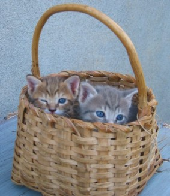

{% extends "base.html" %}
{% block title %}Agriturismo nel Parco{% endblock %}
{% block header %}L'Agriturismo nel Parco Nazionale del Pollino{% endblock %}
{% block description %}Trova un Agriturismo consigliato nel cuore del Parco Nazionale del Pollino{% endblock %}
{% block keywords %}Agriturismo, Pollino, Rotonda{% endblock %}
{% block body %}
{% load box %}
{% load call %}
{% flickr "Scegli il tuo agriturismo" "2176/2277623747_4eb94580dd_m.jpg" right horizontal %}
L'Agriturismo rappresenta il modo migliore per trascorrere una vacanza nel Pollino.
Grazie all'agriturismo il rapporto con le tradizioni gastronomiche, l'ambiente, la gente del Pollino e l'agricoltura è totale e vissuto in prima persona.
In Agriturismo la Vostra vacanza è intensa, calda, solidale, amichevole senza trascurare nessuno degli aspetti della tradizionale e calorosa ospitalità delle genti del Pollino.
{% endbox %}
{% flickr "Agriturismo Asklepios" "2348/2213554074_ddbeb6b515_m.jpg" left horizontal %}
L'Agriturismo più piccolo del mondo, a pochi km da Rotonda.
Pernottamento e prima colazione.
Per gli escursionisti informazioni e pacchetti comprensivi di accompagnamento con Guida del Parco.
Agriturismo Asklepios »
{% endbox %}
{% flickr "Agriturismo Civarra" "2344/2212437613_4d52279a13_m.jpg" right horizontal %}
Nella quiete del Pollino a 6 km dal centro di Rotonda in posizione panoramica.
Pernottamento in 4 suite, 16 posti letto, ristorazione tipica solo su prenotazione.
Agriturismo Civarra »
{% endbox %}
{% flickr "Agriturismo La Masseria Sulle vie della Transumanza" "2800/4135798586_9a60041ff3_m.jpg" left horizontal %}
A circa 900 metri s.l.m, nel comune di Rotonda,
l’Agriturismo Masseria si trova in posizione panoramica sulla Valle del Mercure e sulle pendici del Pollino Lucano.
Agriturismo La Masseria »
{% endbox %}
{% contentbox "Vi aspettiamo!" %}

{% endbox %}
{% endblock %}
{% block right %}
{% smallbox Scegli il tuo Agriturismo %}